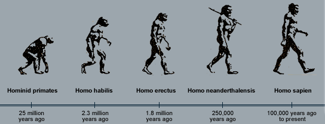

- The study of fossils is called paleontology.
- Fossils are remains of organisms that lived in ancient times.
- Most fossils are remains of hard parts of the body such as bones, teeth, shells and exoskeletons.
- Some fossils are just impressions of the body parts, e.g. footprints, leaf-vennation patterns, etc.
- Fossils are usually found in sedimentary rocks which have been formed by deposition of sediments over millions of years.
- The deeper the layer of sediments, the older the fossils found in that layer.
- Modem man, Homo sapiens, evolved from ape-like creatures 25 million years ago.
- These evolved to upright, tool using creature called Australopithecus afarensis which had a cranial capacity of 400-500 cc.
- This evolved through several intermediates; Homo habilis and Homo erectus to modem day human.
- Homo sapiens has a cranial capacity of 1350 - 1450 cc.
- Homo sapiens is more intelligent.
- Main features in human evolution include bipedal posture, is an omnivore and has an opposable thumb.

Limitations of the Fossil Evidence
- Only partial preservation was usually possible because softer parts decayed. The fossil records are therefore incomplete.
- Distortion - parts of organisms might have become flattened during sedimentation.
- Subsequent geological activities e.g. erosion, earthquakes, faulting and uplifting may have destroyed some fossils.